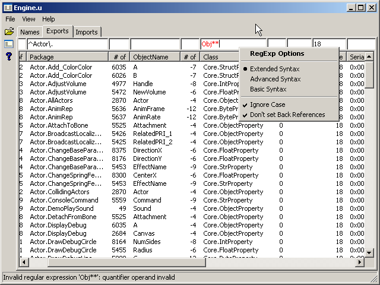

Unrilities
Unrilities is a a cross-platform toolkit for previewing and editing Unreal Engine package files.
Current Features
- Package Preview
- Name, Export and Import package tables displayed in lists.
- Multi-column list sorting by default.
- Each list column has a numerical or regular expression filter. Use them to view just the specified items.
- Info about package tables displayed in a list.
- Import and Export tables displayed in tree lists.
- Export table has 7 tree display modes:
- "All - Package Tree" - show all items, use package tree.
- "All - Class List" - show all items, group by item class.
- "Scripts - Package Tree" - show scripts, use package tree.
- "Scripts - Class List" - show scripts, group by item class.
- "Scripts - Inheritance Tree" - show script classes, use script tree.
- "Data - Package Tree" - show data items, use package tree.
- "Data - Class List" - show data items, group by item class.
- Import table has 2 tree display modes:
- "All - Package Tree" - show all items, use package tree.
- "All - Class List" - show all items, group by item class.
- Export table has 7 tree display modes:
- Name, Export and Import package tables displayed in lists.
Downloads
- Win32 binaries v0.2
- Source
- CVSROOT: :pserver:anonymous@cvs.sourceforge.net:/cvsroot/unrilities
- Repository: wxUnrilities
- Tag: RC_0-2
- CVSROOT: :pserver:anonymous@cvs.sourceforge.net:/cvsroot/unrilities
Support
Screenshot

|